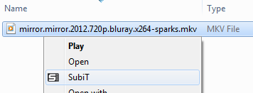
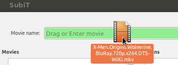

Movie files menu integration
With SubiT, you can download subtitles to your favorite movies and serieses by just right clicking them and executing SubiT.

Querying from within the program
Additionally, you can launch SubiT directly, and enter the desired movie name or drag him to the window.
